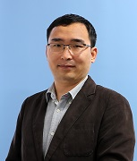

|
Miaohui Wang Ph.D. 


王妙辉，香港中文大学电子工程哲学博士（CUHK），深圳大学长聘副教授（SZU），博导，IEEE 高级会员，中国图象图形学会多媒体专委会委员（CSIG），中国人工智能学会青工委员（CAAI）。他主持多项纵向科研项目（含国家、省、市级等面上-青年项目），已顺利结题承担或参与的国家自然科学基金、香港RGC/ITF基金等各级项目。他拥有丰富的产学研经验，在国内（2010-2011，2017-至今）、中国香港地区（2015-2017）、美国（2014-2015）都有工作或研究经历。他曾获得《广东省科技进步奖一等奖》、《上海市优秀研究生成果奖》、《上海市优秀毕业生》、《深圳市海外高层次人才》等荣誉。
他现在主要从事智能视觉计算方面研究，着力解决高维视觉数据在受限环境下重建、压缩及评价。在T-PAMI、IJCV、T-IP、CVPR、 ICCV、AAAI、IJCAI、NeurIPS等国内外学术期刊和会议已发表100多篇同行评议论文，其中近5年以第一作者/通信作者发表IEEE Trans.和CCF-A类文章40多篇。
他现担任(IEEE SIGNAL PROCESSING LETTERS)等多个中科院SCI分区期刊的副编辑（AE）或客座编委，获多媒体领域旗舰会议ICME2021优秀审稿人，曾担任CCF-A/B类国际会议AAAI/ICME分会主席，就任多个国际会议的程序委员会。
- 新!!! 欢迎想读深圳大学计算机视觉方向硕士、博士（已取得硕士的优先）的同学or专职研究岗位的朋友，联系我（mhwang@szuDOTeduDOTcn）！
- 新!!! 1篇论文被多媒体领域著名期刊ACM TOMM接收，IF=5.2!
- 新!!! 1篇论文被工业信息处理领域顶级期刊IEEE T-II接收，IF=11.7!
- 新!!! 获广东省计算机学会优秀论文一等奖!
- 新!!! 2篇论文被AAAI 2025接收（人工智能领域顶会，CCF-A类会议）!
- 指导的研究生黄润楠、张荣获2024年国家奖学金!
- 1篇论文被计算机视觉领域顶级期刊Springer IJCV接收，IF=19.5!
- 1篇论文被NeurIPS 2024接收（人工智能领域顶会，CCF-A类会议）!
- 1篇论文被信号处理领域重要期刊IEEE SPL接收!
- 获广东省科技进步奖一等奖!
- 1篇论文被工业信息处理领域顶级期刊IEEE T-II接收，IF=11.7!
- 指导的研究生许倬维获2024年深大百篇优秀研究生论文!
- 1篇论文被IJCAI 2024接收（人工智能领域顶会，CCF-A类会议）!
- 1篇论文被工业信息处理领域顶级期刊IEEE T-II接收，IF=12.3!
- 1篇论文被信号处理领域重要期刊IEEE SPL接收!
- 1篇论文被神经网络领域著名会议IJCNN 2024接收!
- 2篇论文被AAAI 2024接收（人工智能领域顶会，CCF-A类会议）!
- 指导的研究生许倬维获2023年深大优秀毕业生!
- 1篇论文被计算机视觉领域顶级期刊IEEE T-PAMI接收，IF=23.6!
- 3篇论文被ACMMM 2023接收（多媒体领域顶会，CCF-A类会议）!
- 1篇论文被工业信息处理领域顶级期刊IEEE T-II接收，IF=12.3!
- 指导的研究生黄亦婧获2023年深大百篇优秀研究生论文!
- 1篇论文被人工智能领域顶级会议IEEE ICCV 2023接收（机器学习与计算机视觉顶会，CCF-A类会议）!
- 1篇论文被智能交通领域顶级期刊IEEE T-ITS接收，IF=9.5!
- 1篇论文被人工智能领域顶级会议IJCAI 2023接收（人工智能领域顶会，CCF-A类会议）!
- 2篇论文被国际多媒体领域重要会议ICME 2023接收（CCF-B类会议）!
- 1篇论文被人工智能领域顶级会议AAAI 2022接收（人工智能领域顶会，CCF-A类会议）!
- 1篇论文被工业信息处理领域顶级期刊IEEE T-II接收，IF=11.6!
- 指导的研究生许倬维获2022年国家奖学金!
- 1篇论文被人工智能领域顶级会议NeurIPS 2022接收（人工智能领域顶会，CCF-A类会议）!
- 1篇论文被消费电子领域顶级期刊IEEE T-CE接收!
- 1篇论文被人工智能领域会刊IEEE T-ETCI接收!
- 指导的研究生黄亦婧 （腾讯）、刘雪芹（欢聚时代YY）获2022年深大优秀毕业生!
- 指导的本科生邝兆年（赴西交大深造）获深大百篇优秀论文!
- 1篇论文被多媒体领域顶级会议ACM MM2022接收（多媒体领域顶会，CCF-A类会议）!
- 1篇论文被工业信息处理领域顶级期刊IEEE T-II接收，IF=11.6!
- 1篇论文被多媒体领域顶级期刊IEEE T-MM接收!
- 1篇论文被人工智能领域顶级会议IEEE CVPR 2022接收（机器学习与计算机视觉顶会，CCF-A类会议）!
- 1篇论文被工业信息处理领域顶级期刊IEEE T-II接收，IF=11.6!
- 1篇论文被光学信息处理领域顶级期刊OE接收!
- 指导的研究生黄亦婧、刘雪芹获2021年国家奖学金!
- 1篇论文被医学信息处理领域顶级期刊IEEE J-BHI (T-ITB)接收!
- 1篇论文被视频快速算法领域著名期刊Springer RTIP接收!
- 1篇论文被仪器仪表领域顶级期刊IEEE T-IM接收!
- 优秀审稿人奖ICME 2021!
- 1篇论文被信号处理领域重要期刊IEEE SPL接收!
- 1篇论文被医学图像处理领域顶级期刊IEEE T-MI接收，IF=10.05!
- 指导的本科生黎卓然等获得2021年美国大学生数学建模(MCM)大赛Finalist奖（0.5-1%）!
- 1篇论文被视频处理领域顶级期刊IEEE T-CSVT接收!
- 2篇论文被IEEE ICME 2021接收（多媒体领域顶会之一，CCF-B类会议）!
- 1篇论文被遥感图像处理领域顶级期刊IEEE T-GRS接收!
- 2篇论文被ACM MM2020接收（多媒体领域顶会，CCF-A类会议）!
- 深圳大学2020年“腾讯益友奖”!
- 获得深圳大学2020年教学单项奖!
- 指导的研究生林家欣获2020年深圳大学优秀毕业生，博士深造!
- 指导的本科生李炯承等获得2020年美国大学生数学建模(MCM)大赛Finalist奖（0.5-1%）!
- 获得深圳大学2019年度优秀教师!
Last Update: 2022.
WANG MIAOHUI
All rights reserved.